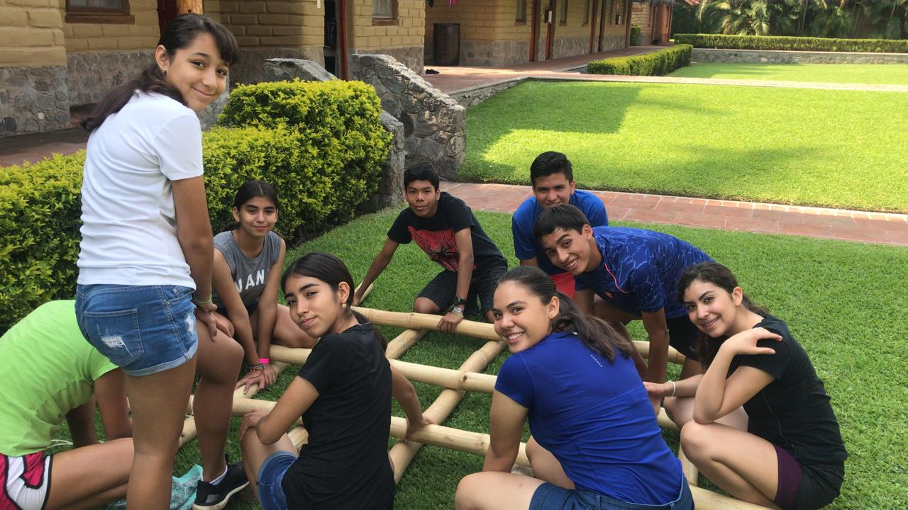

EXPLORA
- EXPLORA era un lugar bastante grande, en el cual había diversas zonas donde se realizaban diferentes actividades, cada una llevándote al límite.
- Con motivo de realizar un viaje escolar por la graduación de secundaria, realizamos un viaje a este lugar, donde pudimos desconectarnos completamente de los dispositivos tecnológicos para vivir una experiencia llena de actividades deportivas, diversión y que despertara un interés en la naturaleza en nosotros.
- Conocimos a maravillosas personas que nos dieron grandes lecciones de vida, personas que siempre recordaremos por su carisma y sus ganas de motivarnos a siempre ser felices y disfrutar de la vida.